耳朵修正 · 关羽持刀 · 维度建筑
本页模型和建筑图使用 Minecraft 实际渲染器。建筑是生产代码生成布局的离屏预览，并非存档内截图；未模拟地形、流体和战利品。
主殿与书院
主殿：琉璃重檐、外柱廊与格窗
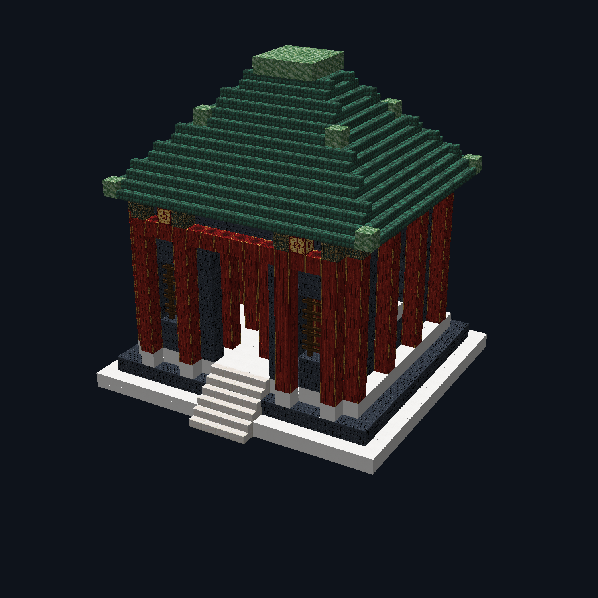
书院：瓦顶、低院墙与开放入口
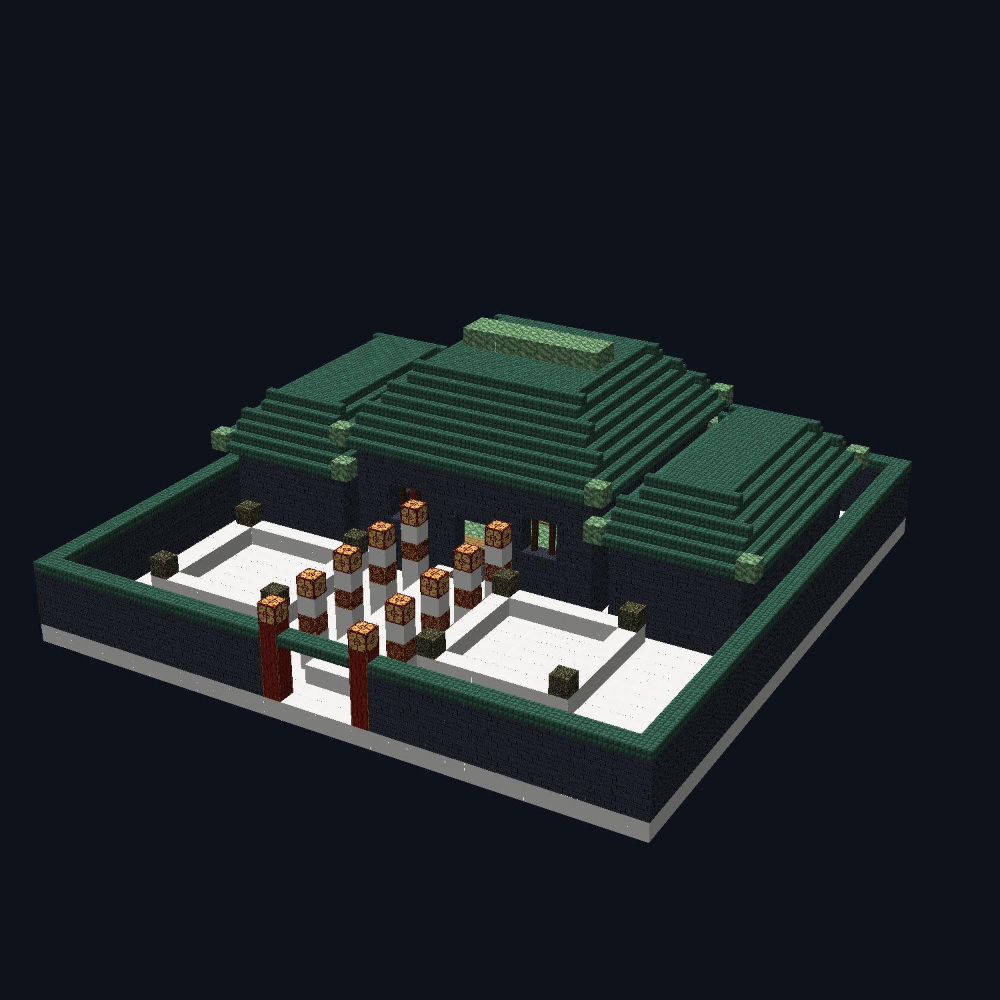
耳朵左右两侧
龙帝、九霄天将、玉甲卫、冥卒四套新贴图修正左右 UV；后脑使用独立的头发/头盔图块，不再复制耳朵。
关羽：上段恢复，只删下段余杆
上轮误改
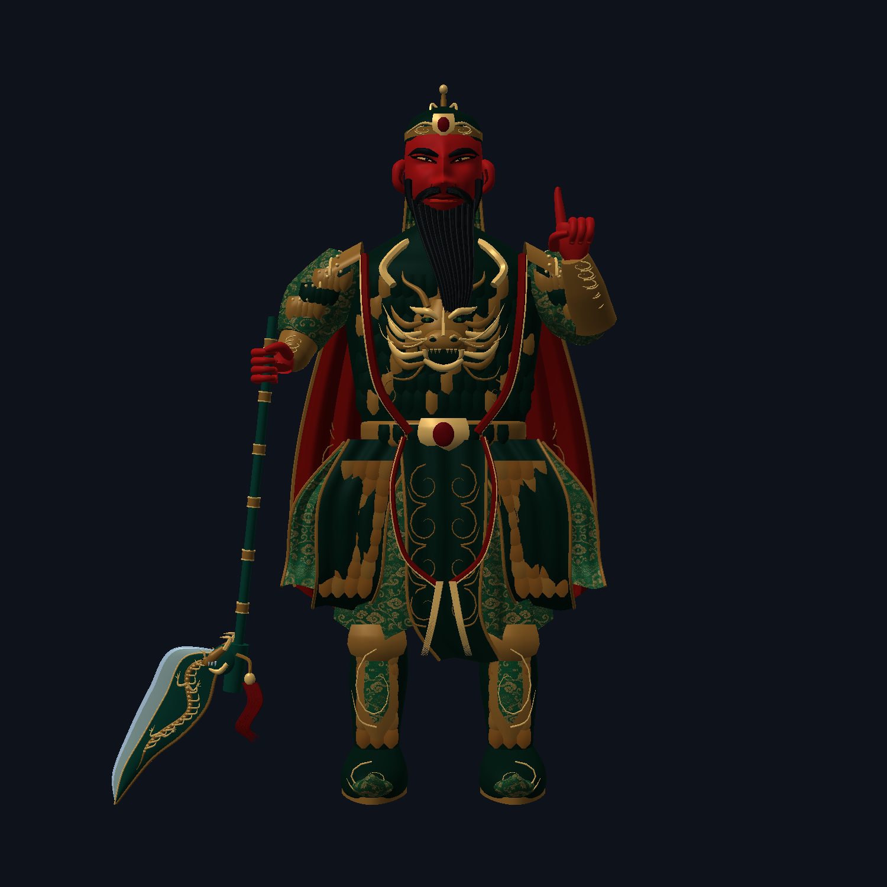
本轮修正
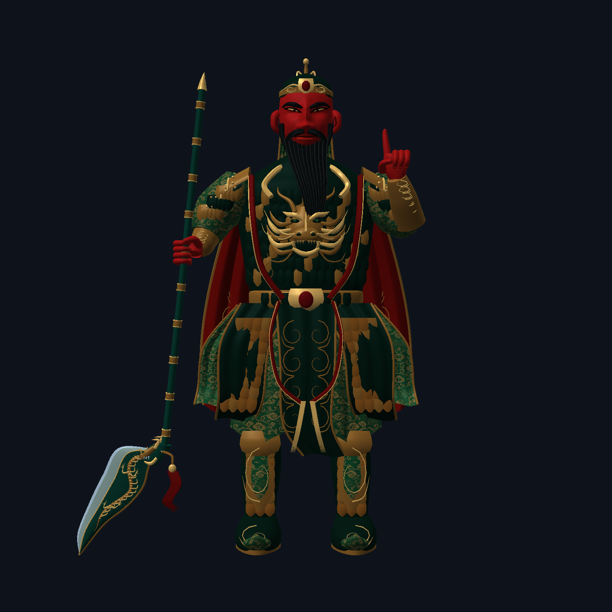
22 张王朝方块贴图 · 左旧 / 右新
每张独立重绘，游戏内128×128；下方附平铺效果。没有覆盖原版或其他模组的贴图。
宫廷砖
汉白玉
玉块
青铜块
朱红柱侧面
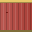
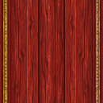
朱红柱顶面
玉矿
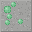
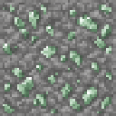
深层玉矿
龙晶矿
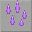
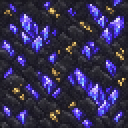
宫灯
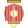
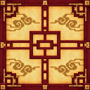
龙椅
祭坛
召唤祭坛
编钟
太鼓
香炉
屏风
匾额
云门
天朝玉门
地府门
龙门
纹理更新可作用于已有方块；建筑布局修改仅影响以后新生成的建筑，不重建旧存档。修改说明 · 图像生成提示词